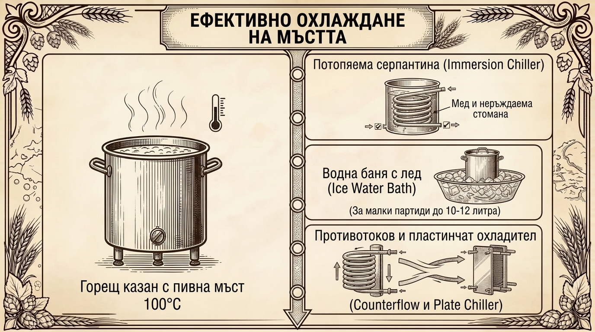
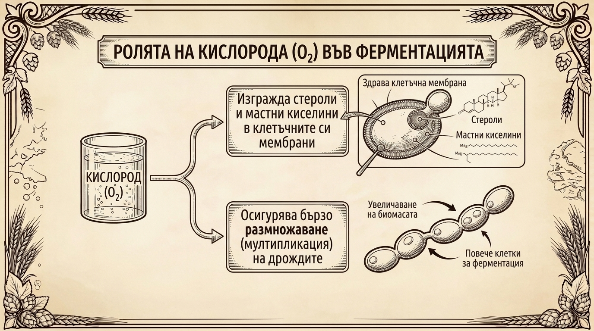

Преходът към ферментатора: Критичният мост между варене и ферментация
След като 60 или 90-минутното бурно варене приключи, в казана остава гореща, напълно стерилна пивна мъст, наситена с разтворени захари, аминокиселини и хмелови съединения. В този момент процесът пресича границата между горещата фаза, пазена от високата температура, и студената фаза, където всяка грешка може да компрометира партидата.
Начинът, по който ще охладите течността, ще отделите коагулиралите белтъчини и ще внесете кислород преди засяване на дрождите, определя три фундаментални фактора: крайната бистрота на пивото, жизнеността на ферментацията и отсъствието на нежелани вкусови дефекти.
4.1. Температурната опасност и образуването на дефекти
В секундата, в която изключите котлона, пивната мъст навлиза в рисков температурен интервал. За да запазите нейния профил, преминаването през температурния прозорец между 60°C и 20°C трябва да се извърши максимално бързо.
-
Биологичен риск от инфекции:
В диапазона между 30°C и 50°C термофилните и мезофилните бактерии (млечнокисели Lactobacillus, оцетнокисели Acetobacter и диви дрожди) намират оптимална среда за светкавично размножаване. Всяка излишна минута, прекарана в бавно естествено изстиване, увеличава шанса диви щамове да колонизират мъстта преди селектираните пивоварни дрожди. -
Натрупване на диметил сулфид (DMS):
В горещата течност прекурсорът S-метилметионин (SMM), идващ предимно от светлите малцове, продължава да се разпада бавно до летливото серно съединение DMS (Диметил сулфид). Докато мъстта ври бурно, DMS се изпарява заедно с водната пара. Но ако изключите котлона и оставите казана да изстива часове наред без кипене, новообразуваният DMS не може да отлети, разтваря се обратно в течността и придава отчетлив, неприятен дефект на сварена царевица, варено зеле или преварени зеленчуци.
4.2. Технологични методи за ускорено охлаждане
В домашната практика се прилагат три основни метода за бързо сваляне на температурата от 100°C до стойностите за засяване:

-
Потопяема серпантина (Immersion Chiller):
Най-надеждният и масов избор сред домашните пивовари. Представлява спираловидна тръба от мед или неръждаема стомана, която се потапя директно в казана 10–15 минути преди края на варенето. Врящата мъст я стерилизира напълно чрез топлината, без да са нужни химически дезинфектанти. При изключване на котлона през спиралата се пуска студена чешмяна вода.Практически съвет: Лекото раздвижване на мъстта около тръбите с дезинфекцирана лъжица или лопатка ускорява топлообмена неколкократно, скъсявайки времето за охлаждане от 35–40 минути до едва 12–15 минути.
-
Водна баня с лед (Ice Water Bath):
Подходяща за начинаещи пивовари, работещи с малки съдове и обеми до 10–12 литра. Целият казан се поставя в по-широк леген, вана или мивка, предварително пълни с ледена вода и голямо количество ледени кубчета.Внимание: Водата от ледената баня не е стерилна. Работете изключително внимателно, за да не пръсне вода вътре в охлаждащия се казан.
-
Противотокови и пластинчати охладители (Counterflow / Plate Chiller):
При този подход горещата мъст и ледената чешмяна вода текат в срещуположни посоки през съседни изолирани канали. Мъстта излиза директно охладена до 18–20°C на изхода на уреда и постъпва направо във ферментатора. Методът осигурява светкавичен спад на температурата, но изисква изключителна хигиена при измиване, за да не останат частици хмел във вътрешните канали.
4.3. Вихрово въртене (Whirlpool) и утаяване на белтъчния налеп
По време на термичния шок от охлаждането в течността настъпва масивна химическа коагулация. Преди преточването е необходимо пивната мъст да се избистри от два вида нежелани твърди фракции:
- Топъл и студен белтъчен налеп (Hot Break & Cold Break): Протеините и полифенолите, коагулирали при варенето (Hot Break), се допълват от фини протеинови комплекси, наподобяващи снежинки или малки парцалчета (Cold Break), които се преципитират именно при рязкото охлаждане под 60°C.
- Хмелни частици (Hop Trub): Разтворените растителни влакна и утайки от разпадналите се хмелови гранули (пелети).
Как се извършва вихровото въртене (Whirlpool):
След като течността се охлади до желаната целева температура, вземете безупречно дезинфекцирана бъркалка и завъртете мъстта по периферията с бързи, енергични кръгови движения, създавайки центробежен вихър. Веднага след това захлупете казана с капака и оставете съда в пълен покой за 15 до 20 минути.
Центростремителните сили събират всички плътни частици и белтъчни утайки в компактна конусовидна купчинка в самия център на дъното, оставяйки заобикалящата течност напълно бистра и прозрачна.
4.4. Преточване към ферментационния съд
При отварянето на крана или стартирането на сифона течността трябва да се източва внимателно от периферията на казана, така че образуваният централен конус от утайка (trub) да остане незасегнат на дъното.
- Дезинфекция на пътя на мъстта: Напръскайте изходния кран на казана, преливния сифон и силиконовия маркуч обилно с дезинфекционен разтвор непосредствено преди прехвърлянето.
- Колко утайка е допустима: Преминаването на незначително количество фин белтък във ферментатора не е опасно и дори осигурява минимални хранителни липиди за дрождите. Въпреки това, допускането на голяма маса зелена хмелна каша и груб налеп води до появата на стипчиви, тревисти и кални оттенъци при последващото отлежаване на бирата.
4.5. Аерация и оксигенация: жизненият кислороден импулс
В пивоварството кислородът е най-опасният окислител на всеки друг етап, причинявайки стареене, потъмняване и дефекти на мокър картон. Има обаче едно-единствено критично изключение: моментът непосредствено преди засяване на дрождите в охладената мъст.

Защо дрождите се нуждаят от разтворен кислород?
Дрождите не използват кислорода за дишане при алкохолната ферментация – те ферментират захарите анаеробно. Кислородът им е жизненонеобходим в началната адаптационна фаза (т.нар. Lag фаза) за биохимичен синтез на ергостерол и ненаситени мастни киселини. Тези липидни компоненти изграждат здрави, еластични и пропускливи клетъчни мембрани. Без достатъчно кислород дрождевите клетки остават с крехки стени, размножават се трудно, стават уязвими към нарастващия алкохолен процент и спират ферментацията преждевременно (заседнала ферментация / stuck fermentation).
Практически методи за аериране в домашното пивоварство:
-
Разплискване и енергично разклащане (Метод без специализирано оборудване):
Пуснете изходния маркуч да пада свободно отвисоко във ферментатора, за да се разплисква и пени обилно, увличайки атмосферен въздух. След преточването затворете плътно капака и разклатете съда енергично в продължение на 2–3 минути. Този метод разтваря около 6–8 ppm кислород, което е напълно достатъчно за стандартни бири със средна плътност (до 1.055 OG). -
Аквариумна помпа със стерилен микронен филтър:
Малка въздушна помпа нагнетява въздух през антибактериален филтър (0.2 микрона) и дифузионен камък от неръждаема стомана, потопен на дъното на ферментатора. Подаването на фини мехурчета за 10–15 минути насища мъстта с равномерен кислороден поток без риск от замърсяване. -
Чист кислород от медицински флакон:
За силни и плътни бири (Double IPA, Imperial Stout, Barleywine с начална плътност над 1.070 OG) атмосферният въздух не може да осигури необходимите 10–14 ppm разтворен кислород. В тези случаи се използва малка бутилка с чист кислород и регулатор, насищаща обема само за 60–90 секунди.
4.6. Засяване на пивоварните дрожди (Pitching)
Преди да отворите пакетчето с дрожди, измерете температурата на мъстта с дезинфекциран термометър. Тя задължително трябва да съответства на работния температурен прозорец за конкретния щам:
- Ейлови щамове (Ale): 18°C – 20°C (засяването в топла мъст над 24°C води до масирано образуване на сивушни алкохоли и остри естери на разтворител).
- Лагерни щамове (Lager): 10°C – 12°C (изисква предварително охлаждане на мъстта в хладилна камера или термобокс).
Директно сухо посипване срещу предварителна регидратация:
- Директно посипване: Съвременните сухи пивоварни дрожди на реномираните производители (Fermentis, Lallemand, Mangrove Jack's) преминават през специален производствен процес (E2U / Easy to Use) и могат да се посипят директно върху образуваната пяна в аерираната мъст. Разпределете ги равномерно върху повърхността.
- Регидратация: Класически подход, при който съдържанието на пакетчето се изсипва в 100 мл стерилна, предварително преварена и охладена до 25–30°C вода за около 15–20 минути преди внасяне. Това намалява началния осмотичен шок върху изсушените клетъчни обвивки, но изисква безупречна хигиена на чашата, за да не се внесе замърсяване.
Финални стъпки:
Веднага след внасянето на дрождите не бъркайте в течността. Затворете плътно капака на ферментатора, притиснете добре гумения уплътнител и поставете водния клапан (хидрозатвор / airlock). Напълнете клапана до обозначеното ниво с работен разтвор на дезинфектант или неутрален високоградусов алкохол (ракия или водка). Преместете съда в тъмно помещение със стабилна, контролирана температура и оставете дрождите да свършат своята магия.